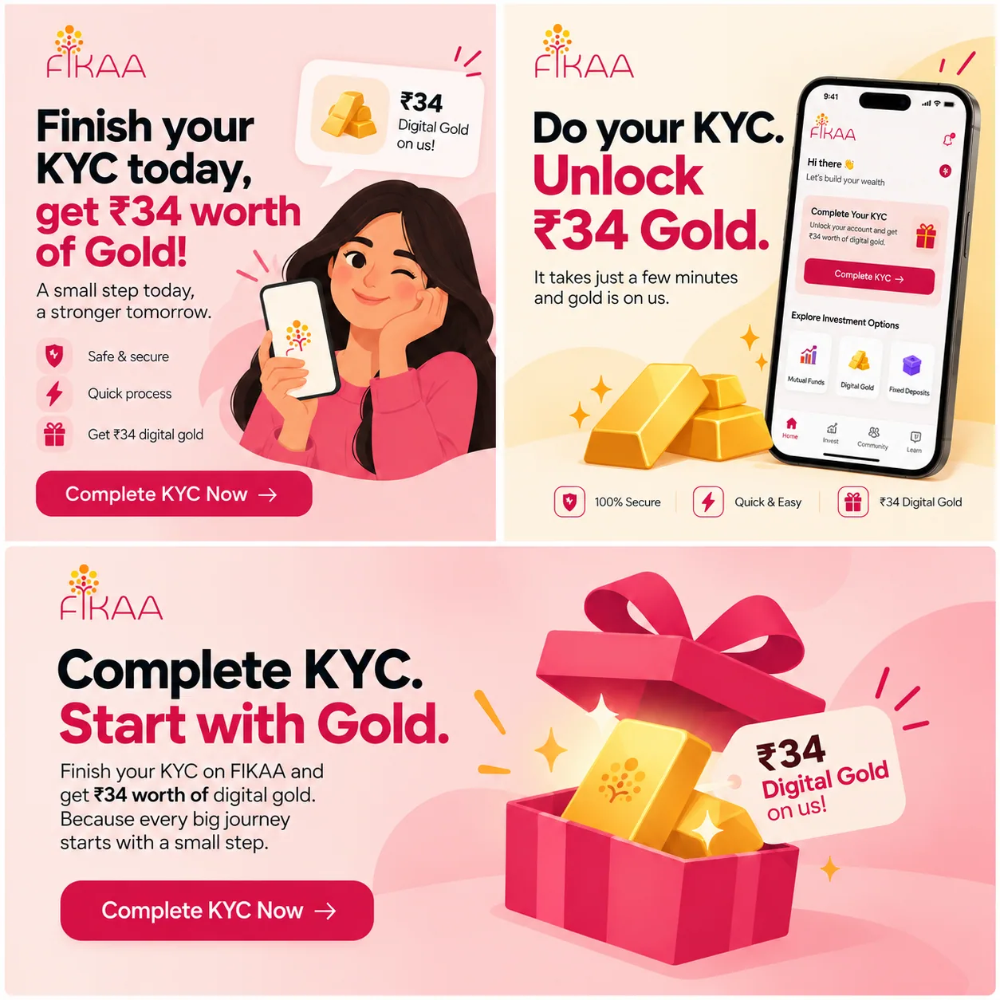
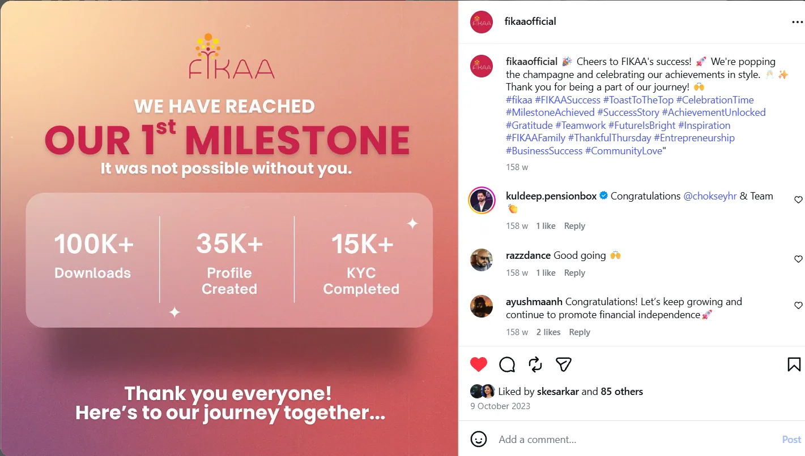

Live client work, written retrospectively. I've written this from memory, supported by public research and AI-assisted drafting and structuring. Some details are approximate. The original campaign files and complete performance reporting weren't available to me.
Attribution. The 10,000+ signup result is a team outcome I contributed to. I'm not presenting it as an individual result.
Visuals. Any recreated or AI-generated visuals are labelled as such.
01A milestone worth celebrating, with a question worth asking
- Brand
- FIKAA, a women-first investment and financial-education platform
- Offer
- Complete KYC and receive ₹34 worth of digital gold
- Objective
- Encourage KYC completion and approval; signups were an earlier funnel step
- Reported result
- 10,000+ signups in approximately one week
- My contribution
- Creative hooks and copy, message direction, design strategy and format adaptations
- Honest verdict
- Partially successful: strong reported signup volume; downstream user quality couldn't be quantified
FIKAA wanted women to take their first real step into investing. So we gave them a reason to start: complete your KYC, get ₹34 worth of digital gold. It worked. Over 10,000 people signed up in about a week. For a young fintech brand, that's a number any team would be proud of.
But a signup count can't explain everything. A few things showed up that, honestly, I still think about:
Reward seekers
Some people clearly wanted the gold more than they wanted FIKAA.
KYC drop-off
Asking someone for their personal documents is a big ask, and it's where people hesitated most.
Audience drift
A women-first brand was signing up a noticeable number of men. Not wrong, but a sign the reward was speaking louder than the brand.
02An offer with a bigger job to do
My contribution
- Worked with the team on message direction and how the incentive should be framed.
- Developed hooks and copy around the KYC action and the digital-gold offer.
- Contributed to roughly 3–4 creative concepts and, as I recall, 3 formats per concept (recollections, not verified production records).
- Adapted creative ideas across formats, rather than treating each placement as a separate strategy.
- Raised concerns about reward-seeking users and suggested stronger qualification or reward mechanics.
FIKAA in the 2023 to early-2024 market
Public coverage from 2023 described FIKAA as a women-focused investment app offering financial education and investment access, including mutual funds and digital gold. In November 2023, FIKAA announced Naina, a virtual brand ambassador, as part of its women-first positioning.
The clearest direct competitor I found was LXME. In June 2023, LXME and DSP Mutual Fund launched GULLUCK, a digital saving tool for women that channelled savings into mutual funds, with the line “Darling, Savings mein Don't Be Silly”. In September 2023, LXME also introduced a women-centric RuPay Dream Card.
Here's how I see it: the challenge was never just another app download. FIKAA's creative had a double job: sell an immediate offer, and stay connected to its bigger financial-independence purpose.
03The real challenge was everything after the click
A ₹34 reward is easy to want. Trusting an app with your PAN and Aadhaar is harder. Deciding to invest your own money is harder still.
Each step asks for more commitment than the one before. I believe the creative's job was to make the first step feel worth it, without making the reward the only reason to take it.
| Layer | Problem to solve | What success should show |
|---|---|---|
| Attention | Make the offer stand out in a crowded fintech feed | People notice and understand the offer |
| Initial intent | Give people a reason to start | People register and begin the intended onboarding step |
| KYC completion | Explain why verification is required and what to do next | Users complete and pass KYC at a measurable rate |
| Qualified activation | Avoid relying only on the reward as the reason to join | Approved users move towards a first investment or meaningful product action |
| Brand fit | Support FIKAA's women-first positioning | Audience and message fit the brand purpose, without assuming other groups are automatically low quality |
The central tension
The incentive was brilliant for acquisition. But it came with a trade-off: the more the reward looked like a standalone benefit, the more likely we were to attract people who wanted the gold without wanting the product.
What I remember, and what I genuinely don't know
- Recalled: some users seemed mainly interested in the incentive.
- Recalled: KYC was a real friction point, because sharing personal information feels sensitive, even intimidating.
- Recalled: men also signed up and completed KYC, despite FIKAA's women-first positioning.
- Unknown: the share of incentive-only users, the exact KYC completion rate, the approved KYC count, cost per approved KYC and first-investment rate.
04Audience: meet Ananya, 24
A strategic hypothesis built from FIKAA's positioning and my recollection, not a targeting report. The people we spoke to were early in their money journey: earning, maybe saving, but not yet confident about investing, and wary of handing over their documents.
Who she is
24, shared flat in Pune, grew up in a Tier 2 city. Two years in marketing, about ₹45,000 a month. The first woman in her family to manage her own salary. Pays for almost everything by UPI; has never completed an investment KYC. Illustrative composite.
What she feels
Money still feels like “a dad thing”, and she quietly wants to change that. Scam stories make her wary of any app asking for documents. Gold feels familiar; mutual funds feel abstract.
How she behaves
Finds apps through Reels and friends, downloads fast and abandons fast, often the moment onboarding asks for something she doesn't have to hand.
What she wants: control of her money, without needing a finance degree. What stops her: not knowing where to start, and not trusting an app with her details.
Barriers, and how the creative answers them
| Barrier | Possible thought | Creative response |
|---|---|---|
| Reason to act | “Why should I sign up today?” | Make the ₹34 digital-gold offer clear, and explain the action needed to qualify |
| Confidence | “I don't know enough about investing.” | Plain language and one main idea; never make the person feel uninformed |
| Trust | “Why should I trust this platform with my details?” | Accurate, verifiable brand and product context, not vague reassurance |
| KYC friction | “Why do I need to share this information?” | Explain the verification step clearly and point users to the legitimate onboarding flow |
| Relevance beyond the reward | “What happens after I get the reward?” | Connect the first action to FIKAA's wider financial-independence purpose |
05What the category was saying
A retrospective audit of public positioning and one campaign example from the period. Not a full archive of competitor ads, and no claims about how they performed.
| Brand / campaign | Observed message | Creative pattern | Implication for FIKAA |
|---|---|---|---|
| LXME × DSP GULLUCK, June 2023 | A digital saving tool for women that connected familiar saving behaviour to mutual funds | Everyday behaviour, approachable language and a relatable cultural insight | A women-first platform can make finance relevant through a human insight, not only an incentive |
| LXME Dream Card, September 2023 | A women-centric RuPay product linked to budgeting, shopping and financial independence | Product-led offering within a broader women-first ecosystem | Women-first positioning was becoming a platform promise, not a single product message |
| FIKAA public positioning, 2023 | Financial independence through knowledge and action; education, mutual funds and digital gold | Education and investment access framed around women's confidence and independence | A short-term acquisition offer should connect to the wider brand purpose |
| Mainstream investing apps | Convenience, product access and digital onboarding | Simple product claims and low-friction journeys | Ease alone may not set FIKAA apart; audience relevance and trust also matter |
What the audit tells me
- Women-first is a positioning territory, not a creative idea. The ad still needs a specific human tension, or a real reason to act.
- Everyday money behaviour makes investing feel relevant. LXME GULLUCK is a good public example of exactly this.
- A reward is clear, but easy to copy. It doesn't explain why anyone should stay with FIKAA.
- Trust needs proof and a good onboarding experience, not vague reassurance.
- Signup volume isn't the whole story. Measurement has to follow KYC and activation.
06Make the first step tangible, then give it a bigger reason
| Insight | Interpretation | Creative implication |
|---|---|---|
| The offer answers “why now?” | A concrete reward reduces hesitation and creates urgency | Lead with ₹34 worth of digital gold and clearly state the required action |
| Simplicity answers “can I do this?” | People new to investing get put off by jargon or an unclear process | Plain language; make KYC the visible next step, not a hidden detail |
| Trust answers “why this platform?” | Financial onboarding asks for sensitive information and needs credibility | Use verifiable company and product context, and explain the process |
| Brand purpose answers “why beyond the reward?” | FIKAA's women-first, financial-independence positioning gives a bigger reason to engage | Test a purpose-led or education-led angle against the direct reward message |
| Signup volume doesn't answer “who stays?” | A reward may attract users with little interest in the platform itself | Measure KYC completion, approval and activation alongside acquisition |
- Immediate promise
- A clear digital-gold reward for completing the required KYC step
- Functional reason
- The offer gives a concrete reason to start onboarding
- Emotional reason
- A manageable first step can make financial participation feel approachable
- Brand connection
- FIKAA's purpose: supporting women's financial independence through knowledge and action
- Primary action
- Complete the required KYC; signup alone isn't the final conversion
- Guardrail
- Make eligibility and reward terms clear; never imply KYC can be skipped or that returns are guaranteed
Message hierarchy
- What do I get? State the reward accurately and visibly.
- What do I need to do? Make the KYC action and eligibility clear.
- Why should I trust this? Use truthful brand and product information, and a transparent process.
- Why does this matter beyond the reward? Connect the entry point to financial learning and independence, without overloading the first frame.
Reward mechanics
I noticed some users were motivated mainly by the incentive, and I raised the idea of stronger qualification, or a less frictionless reward withdrawal. In a future iteration, I'd take this to product, growth and compliance together: can eligibility rules and reward mechanics reduce abuse while staying transparent and fair? What I wouldn't do is make withdrawal deliberately confusing as a substitute for clear terms and proper measurement.
07Three message territories, one clear next step
The concepts below reconstruct the strategy we discussed. New wording is labelled as an example hook, not verbatim historical copy; the original ad files weren't in the material I had.

Tangible reward
Barrier: “What's in it for me?”
- Example hook
- Complete your KYC and get ₹34 worth of digital gold.
- Execution
- Lead with the offer, state the required action and use one clear CTA. The concrete benefit is easy to understand.
Risk and what to test: the reward may become the only motivation. Compare it with the other angles, and measure KYC completion and activation, not just signups.
Investing made approachable
Barrier: “Is this complicated?”
- Example hook
- New to investing? Start with one clear step.
- Execution
- Plain language, a clear sequence and one main point per asset.
Risk and what to test: educational messaging may win attention without moving people to KYC. Measure KYC start and completion rates.
Trust and financial independence
Barrier: “Can I trust this, and why is it relevant to me?”
- Example hook
- Take a first step towards understanding your money.
- Execution
- Verifiable brand context, connected to the women-first purpose.
Risk and what to test: purpose-led creative may get fewer clicks but better downstream intent. Compare approved KYC and first-investment rate where tracking permits.
Format adaptations
| Format | Creative treatment | Question to measure |
|---|---|---|
| Static / square | Reward and CTA in a clear visual hierarchy | Is the offer understood quickly? |
| Reel / Story | The action shown in a short, accessible sequence | Does the first frame hold attention and lead to meaningful action? |
| Carousel | One idea per card, ending with the next step | Do users keep swiping and move to KYC? |
| Banner-style | Short copy and a clear offer visual | Confirm the actual placement before claiming a specific channel |
08Measure the journey beyond the signup
The 10,000+ signups tell us we got attention. Without KYC and downstream metrics, though, we can't say anything about conversion quality or efficiency. Here's the funnel I'd want to see, and what we actually have for each step.
| Funnel stage | Metric | What it answers | Available evidence |
|---|---|---|---|
| Acquisition | Registrations / signups | Did the campaign generate initial interest? | 10,000+ signups reported in about one week |
| KYC intent | KYC starts ÷ signups | Did registrants start the intended next step? | Unavailable |
| KYC completion | Completed KYC ÷ KYC starts | Where did users drop off? | Unavailable; KYC recalled as a friction point |
| KYC approval | Approved KYC ÷ completed submissions | How many passed verification? | Unavailable |
| Efficiency | Spend ÷ approved KYC | What did a verified user cost? | Budget and approved KYC count unavailable |
| Activation | First investment ÷ approved KYC | Did verified users move into product use? | Unavailable |
| User quality | Defined post-KYC activity or first investment | Did users continue beyond the reward? | Qualitative concern only |
| Retention | Repeat activity within an agreed period | Did activated users stay engaged? | Unavailable |
What I'd report next time
- Results by concept and format, with spend and sample size.
- KYC start, completion and approval rates, and cost per approved KYC, not just cost per signup.
- First-investment rate and post-KYC activity, kept clearly separate from qualitative feedback and hypotheses.
I'd want the growth team to agree the primary conversion event, attribution window, sample size and decision thresholds before launch. Without spend and funnel baselines, I can't responsibly set numerical targets or name a winning creative, and I'd rather be honest about that than pretend.
09What worked, and what I still don't know
This campaign generated a substantial number of reported signups. The limitation is that the evidence I have doesn't show how many users completed KYC, got approved or invested. The fairest verdict I can give: partial success at acquisition, with user quality left unresolved.

| Area | What happened, or what we did | My interpretation |
|---|---|---|
| Acquisition hook | A ₹34 digital-gold incentive tied to KYC | A clear offer and a reported signup milestone point to substantial initial interest |
| Creative structure | Three message themes (reward, investing made simple, trust), adapted into multiple formats | A useful strategic structure; no ad-level results show which theme won |
| Signup result | 10,000+ signups in about one week; a team result | A meaningful top-of-funnel result, not proof of 10,000 approved or active investors |
| KYC friction | KYC recalled as a major drop-off point, because personal-information requests feel sensitive | The journey needed clearer explanation and funnel measurement |
| Incentive quality | Some users seemed mainly motivated by the reward; exact count unavailable | A qualitative warning sign, not a quantified failure rate |
| Audience fit | Men also signed up and completed KYC, despite women-first positioning | Worth reviewing for alignment, without assuming male users are automatically low quality |
| Downstream results | KYC approval, spend, cost, first investment and retention unavailable | Final efficiency and long-term value can't be quantified |
The failure metrics we should have tracked
These aren't invented numbers. They're the funnel steps that needed reporting: KYC completion and approval, cost per approved KYC, first-investment rate, and activity after the reward. That last one matters most. It's the only way to tell whether our signups were potential users or just reward seekers, and whether the issue sat with the creative promise, the audience setup, the KYC experience, the reward mechanics, or a mix of all four.
My contribution, and what the team learned
I raised concerns about reward-driven users and suggested stronger qualification. Those ideas were countered well and didn't make the final setup. Looking back, it was a shared growth problem: creative sets expectations, but onboarding, audience strategy, reward rules and measurement shape user quality just as much.
10What this case study can claim, and what it can't
| Topic | Included | Limit or disclaimer |
|---|---|---|
| Signup result | 10,000+ signups in about one week | A team outcome; no individual attribution or independent dashboard verification |
| KYC and user quality | My recollection of KYC friction and reward-seeking behaviour | No verified completion, approval, or incentive-only user count or rate |
| Creative concepts | Reward, approachable investing and trust | Some hooks are reconstructed examples, not verified original copy |
| Competitive research | Publicly dated FIKAA and LXME context from 2023 | Not a complete historical ad audit; no claims about competitor performance |
| Media placement | Multiple formats discussed | The exact media mix is unconfirmed |
| Financial performance | No invented CPA, ROAS or budget figures | Spend, approved KYC, activation and retention unavailable |
Guardrails
- KYC clarity. KYC is an important verification step in financial services. Creative should explain it accurately, never imply it's unnecessary.
- Reward terms. Eligibility and redemption rules should be transparent and reviewed with product and compliance. No deliberately confusing withdrawals.
- Audience interpretation. Gender alone is not a proxy for quality. Evaluate audience alignment and downstream behaviour instead.
- Financial claims. No return guarantees or unsupported safety claims; use approved disclosures where required.
Final reflection
The 10,000+ signups were a meaningful team result, and I'm proud of my part. The campaign taught me to turn a business goal into distinct creative territories and carry them across formats. It also taught me what I now bring to every brief: volume is only half of performance. If I ran it again, I'd still test the incentive alongside education-led and women-first messages, but tie every test to KYC completion, approval and first investment from day one.
References
- LXME × DSP GULLUCK launch. Investment Guru India, 20 June 2023
- LXME GULLUCK campaign video. YouTube
- LXME's women-centric RuPay Dream Card debuts at GFF 2023. IBS Intelligence, 8 September 2023
- FIKAA appoints Naina as its brand ambassador. PR Newswire, 2 November 2023
- Financial independence through knowledge and action. Business India, 17 November 2023
- KYC explainer. SEBI Investor · Getting Ready to Invest. NISM
- FIKAA milestone post. Instagram